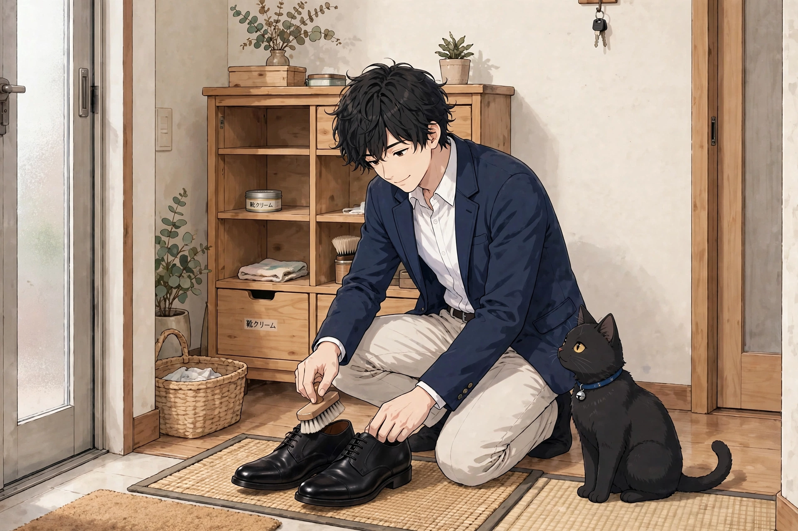

革靴は2足で回す｜買い替えの目安（40代メンズ）

ケント：先に結論です。革靴は2足で rotation すると、寿命が大きく伸びます。買い替えの目安は「かかとのすり減り」「つま先の反り」「履き口の緩み」の3点です。この記事の商品は、仕事で使える形のものだけを先に並べます。
この記事の商品（先に比較）
| 商品 | 価格（税込） | お店 |
|---|---|---|
| マラソン限定 | 6,980円 | FOXSENSE公式 楽天市場店 |
| [24日8:59まで | 11,800円 | LIBERAL ISM |
| 3冠達成 ● ドラマ衣装50作品以上！ ビジネスシューズ | 16,500円 | 本革バッグと靴のkuonn 楽天市場店 |
基準1：2足で回す理由
革は汗の水分を吸います。1日休ませると水分が抜けて形が保てます。連日同じ靴を履くのが、一番の傷みの原因です。
基準2：買い替えの目安
かかとが斜めに減ったら修理か買い替えです。つま先が反り返ってきたら、手入れ不足か寿命のサイン。履き口が緩んでかかとが浮くようなら、サイズも含めて見直してください。
基準3：2足目の選び方
1足目と同じ黒のストレートチップをもう1足か、紺スーツ用に濃い茶を足すのが基本です。形を揃えると手入れ用品も共通で使えます。
あえて推さないもの
- 1足を履き潰すこと（寿命も清潔感も落ちます）
- 安さだけで選んだ合皮（形崩れが早いです）
- サイズの合わないセール品（歩き方が崩れます）
この記事の基準に合う商品
特徴：本革のビジネスシューズに絞りました。2足目の候補として見てください。
PR：この記事のテーマに合う革靴（PR）


あわせて読みたい：清潔感は足元から｜靴の選び方と手入れ／メンズ靴種類別ガイド